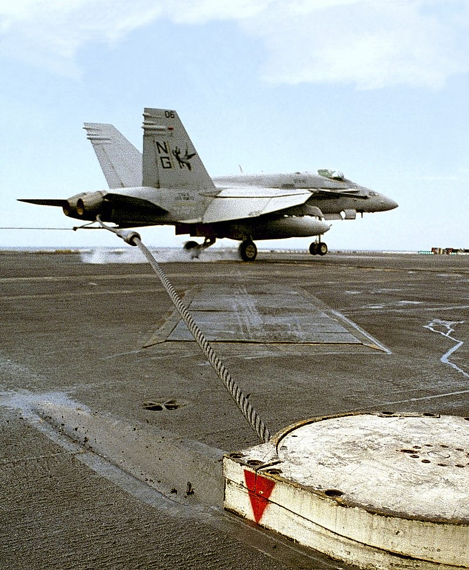
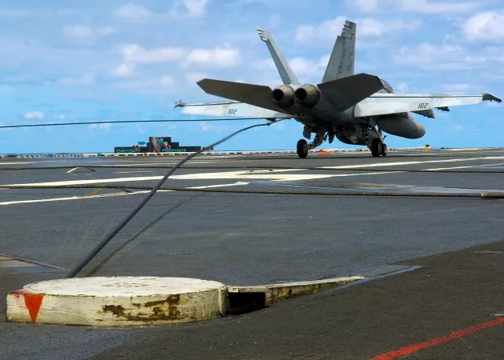
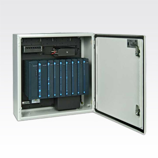
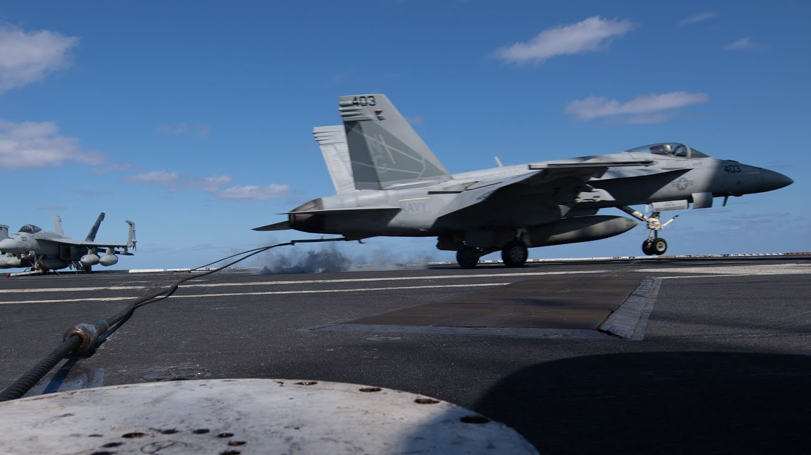
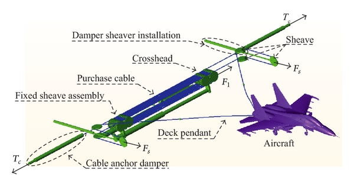

Engineered for the Critical Moment
Aircraft arresting systems represent the pinnacle of safety engineering in aviation, designed to rapidly and safely decelerate aircraft during emergencies.
These sophisticated systems combine mechanical precision, hydraulic power, and electronic control to transform potentially catastrophic situations into controlled stops.
When a fighter jet experiences brake failure, a training aircraft overshoots the runway, or an emergency landing requires immediate deceleration, arresting systems stand ready to intervene. The technology behind these systems has evolved dramatically over decades, from simple barriers to today's computer-controlled networks that can stop aircraft traveling at speeds up to 180 knots within a precisely calculated distance.
Explore Systems
A Century of Innovation
From naval origins to modern military and civil applications

The history of aircraft arresting technology traces back to the earliest days of naval aviation, when engineers faced the challenge of landing aircraft on the limited deck space of carriers. What began as experimental arrangements of cables and mechanical brakes has evolved into sophisticated systems deployed at military airfields worldwide.
From the MA-1A chain barriers of the Korean War era to today's BAK-12/14/15 systems integrated with Motorola's digital control networks, each advancement has increased reliability, reduced maintenance requirements, and enhanced safety. This evolution represents one of aviation's most successful safety technologies, with thousands of successful engagements saving both valuable aircraft and irreplaceable lives.
Explore HistoryComprehensive System Overview
Modern aircraft arresting infrastructure consists of several integrated components
Energy Absorbers
Systems like the BAK-12 use hydraulic friction to gradually dissipate an aircraft's kinetic energy
Engagement Devices
Including retractable hook cables (BAK-14/Type H) and net barriers (BAK-15)
Control Systems
Motorola's ACE3600-powered PAACS provides digital monitoring and operation
Mobile Solutions
Deployable systems for expeditionary operations and temporary airfields
Each component plays a vital role in the split-second sequence that transforms a potential disaster into a routine safety procedure. Understanding how these systems work together provides insight into one of aviation's most critical safety technologies.
View All SystemsMotorola Integration
Digital control systems that transformed aircraft arresting operations
For over three decades, Motorola has played a pivotal role in the evolution of aircraft arresting technology, transforming manual systems into sophisticated digital networks that enhance safety, reliability, and operational efficiency.
From early MOSCAD-L implementations to today's advanced ACE3600-powered Phoenix Aircraft Arresting Control System (PAACS), Motorola's solutions have become the standard for military airfields worldwide, providing controllers with unprecedented capabilities for monitoring and managing these critical safety systems.
Learn More
Global Implementation
Protecting runways at military and joint-use facilities worldwide

Military Applications
Aircraft arresting systems protect runways at military installations worldwide, from the United States and NATO allies to bases across Asia, Africa, and South America.
Read More
Technical Integration
Modern systems feature electronic/hydraulic computer-controlled components that directly and continuously measure aircraft location and velocity for automatic braking adjustment.
Read MoreExpert Support and Integration
As an authorized Motorola SCADA integrator with decades of experience, Global Data Specialists provides comprehensive support for aircraft arresting control systems.
Contact Global Data Specialists